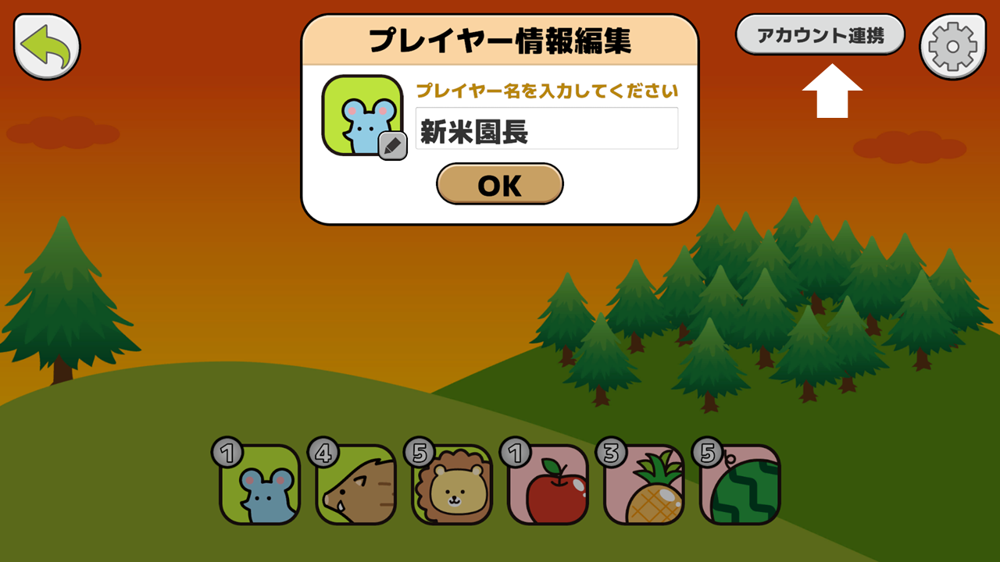
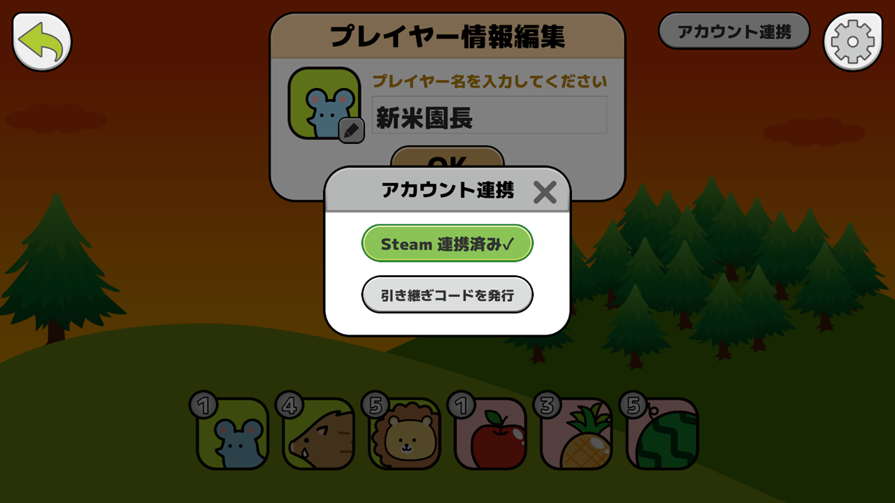
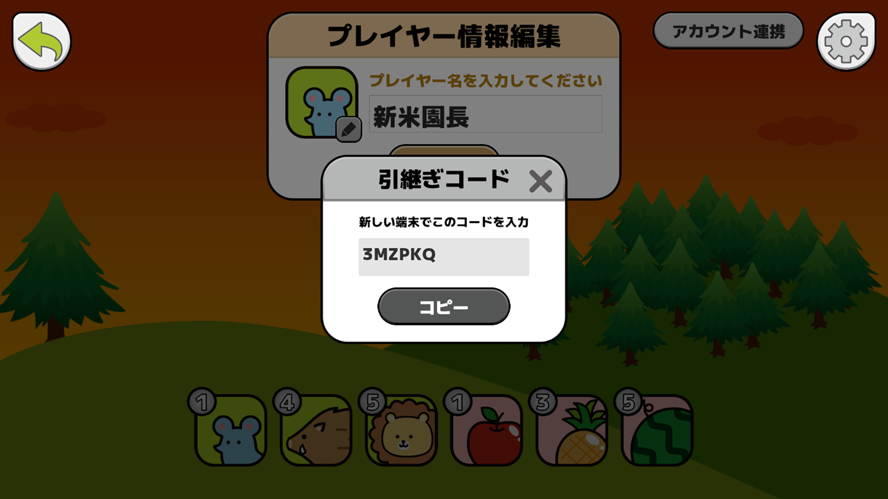
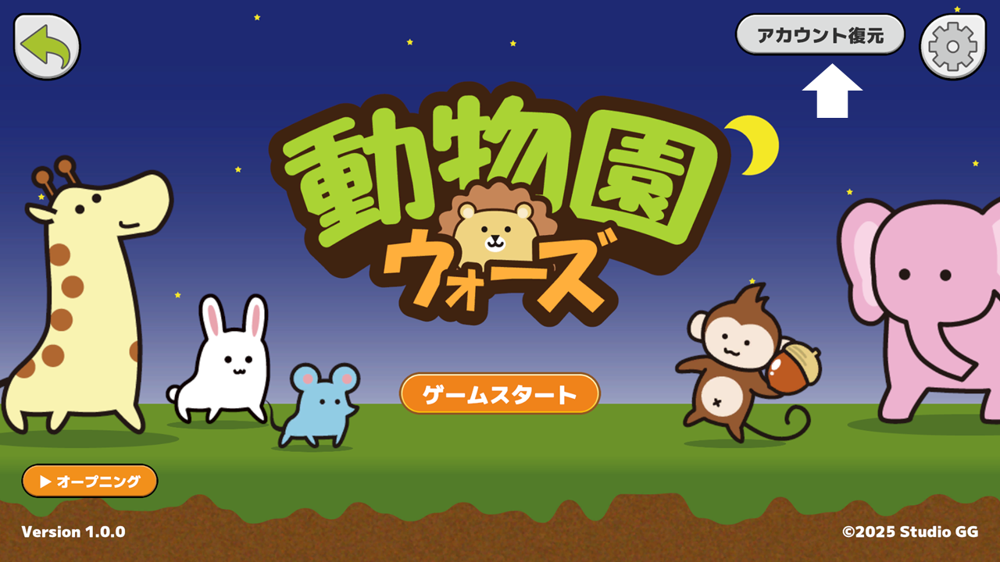
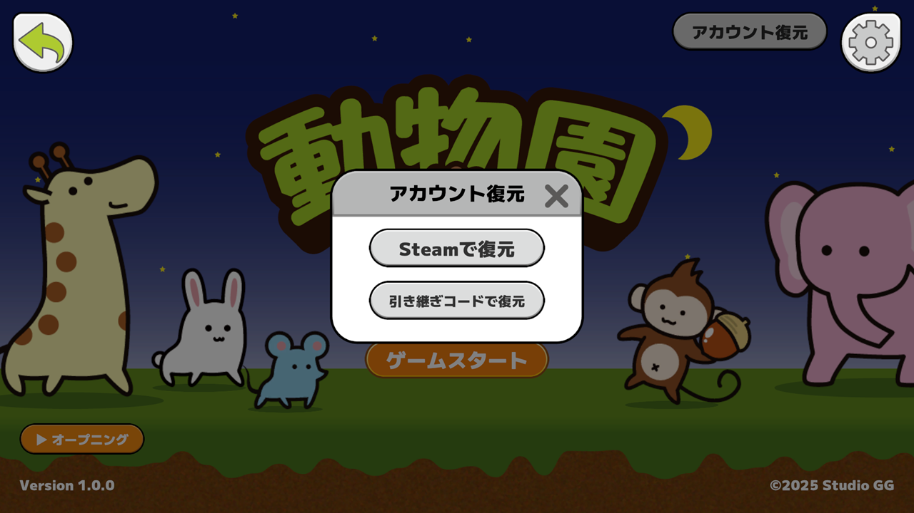
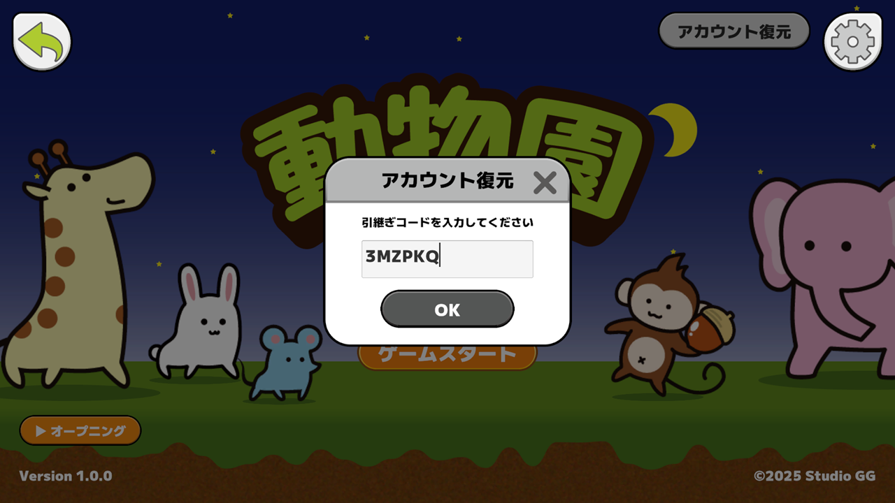
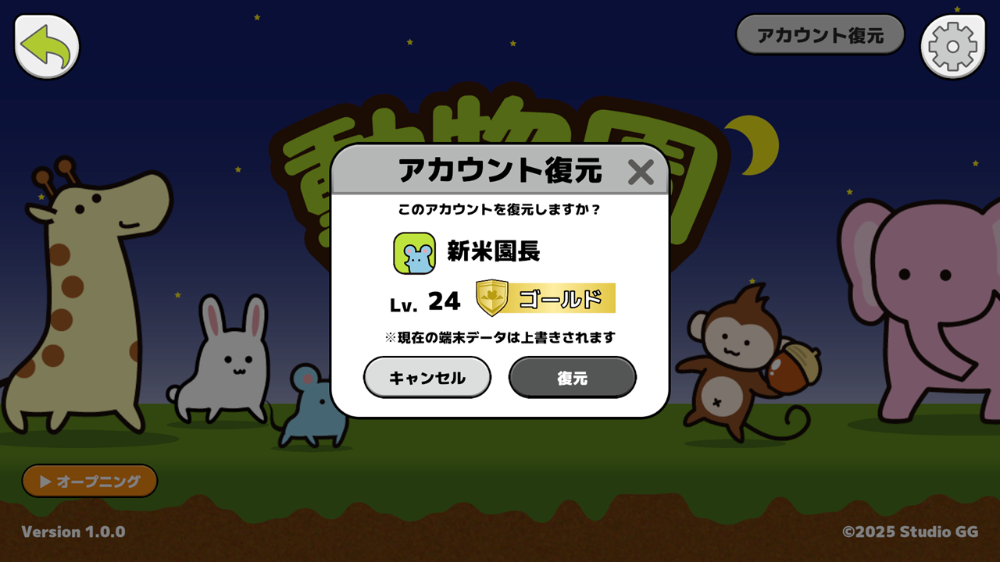

Zoo Wars Support
アカウント引継ぎ方法
On Your Old Device
旧端末で行うこと



On Your New Device
新端末で行うこと
同じプラットフォームでアカウント連携済みなら、通常どおりゲームを開始することで同じアカウントのデータが復元されます。自動で復元されない場合や、プラットフォームを跨いで移行する場合は、以下の手順でタイトル画面からアカウント復元を行ってください。




うまく引き継げない場合
引継ぎコードの有効期限は発行から1時間です。期限が切れた場合は、旧端末であらためてコードを発行してください。
コードを入力しても復元できない場合は、入力ミスがないかを確認してください。コピーしたコードをそのまま貼り付けられる場合は、その方法がおすすめです。
復元確認画面で表示されるプレイヤー名やレベルが意図したデータと違う場合は、そのまま「復元」を押さずにキャンセルしてください。